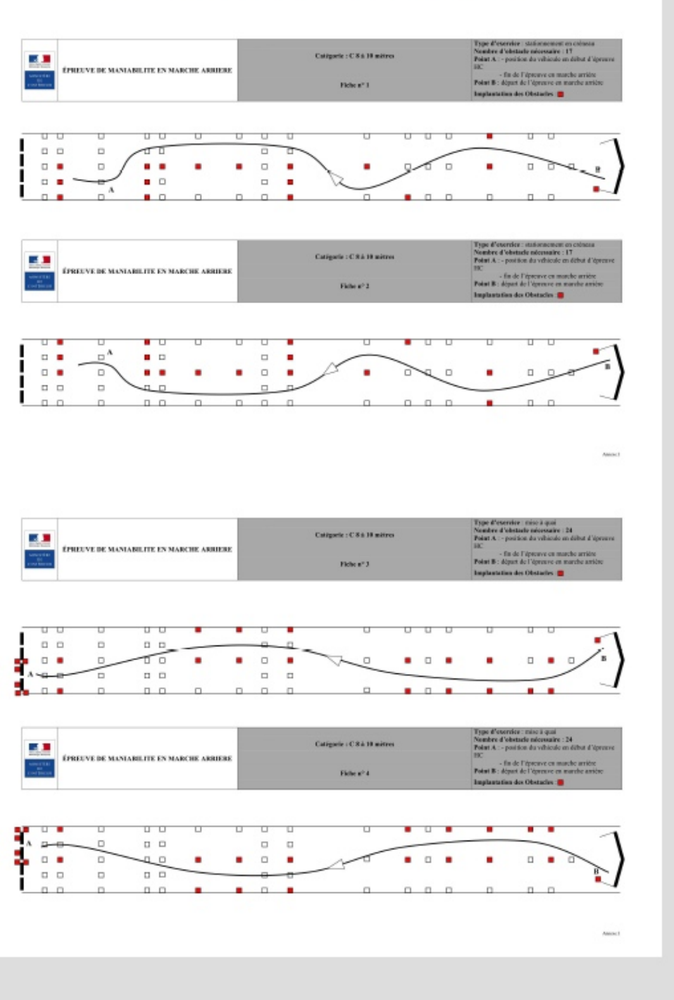
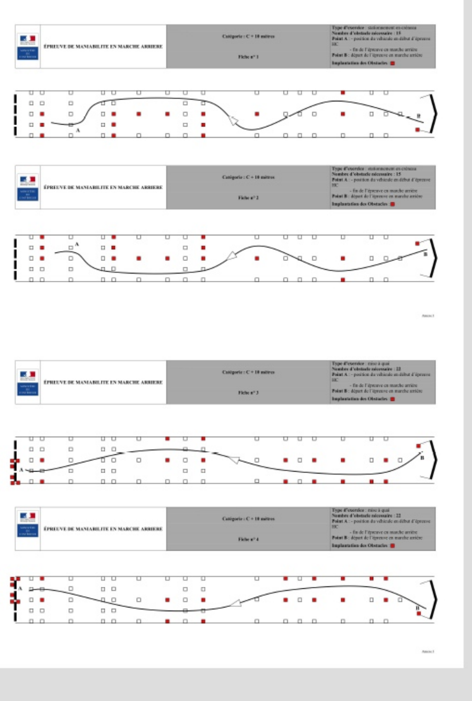

↩️ MANŒUVRE - Pistes officielles catégorie C
Pistes issues de la trame officielle inspecteur C.


📋 Règles officielles de l’épreuve
- 5 minutes maximum pour réaliser l’exercice.
- Ne pas déplacer, renverser ou incliner un obstacle, en marche avant comme en marche arrière.
- Ne pas sortir de l’aire de manœuvre : la bande de roulement ne doit pas franchir les lignes de rive. Avec des roues jumelées, c’est la roue extérieure qui est prise en compte.
- Ne pas franchir la zone matérialisant l’arrêt de précision, la place de stationnement ou la mise à quai.
- Immobiliser le véhicule au point A en fin d’exercice.
- Le chronomètre démarre dès la mise en mouvement et s’arrête sur indication du candidat.
- Déplacements à allure réduite, portières fermées.
- Le candidat peut s’arrêter, descendre après immobilisation pour regarder en vision directe et corriger sa trajectoire par une ou plusieurs marches avant dans le tracé prévu.
⚠️ Objectif obligatoire non réalisé : l’exercice est interrompu et le résultat est défavorable.
🔁 Deuxième essai : après un échec, il peut être proposé immédiatement si le nombre de points est suffisant et qu’il n’y a pas d’erreur éliminatoire.
Source : guide officiel examinateur — test de maniabilité.